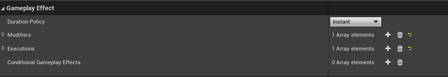
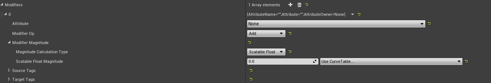
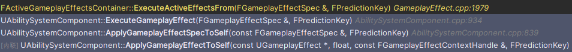
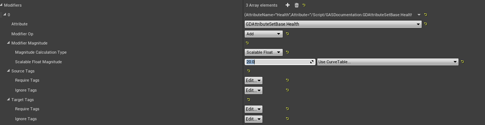

Gas设计解析三：GE属性修改案例
上一篇章提到 GE 对属性进行修改的两大方式：Modifier 与 Execution。其中 Modifier 又有四种 Magnitude 计算方式。这一偏结合实际项目案例，分别说明它们是如何运作的。

Modifier
Modifier 这种方式一次只能对一个 Attribute 进行修改，并且需要给定一个修改方式，也就是 ModifierOp。

GE 中保存 Modifier 的成员大致如下：
UPROPERTY(EditDefaultsOnly, BlueprintReadOnly, Category = GameplayEffect, meta = (TitleProperty = Attribute))
TArray<FGameplayModifierInfo> Modifiers;FGameplayModifierInfo 中最重要的是三个信息：
UPROPERTY(EditDefaultsOnly, BlueprintReadOnly, Category = GameplayModifier)
FGameplayAttribute Attribute;
UPROPERTY(EditDefaultsOnly, BlueprintReadOnly, Category = GameplayModifier)
TEnumAsByte<EGameplayModOp::Type> ModifierOp;
UPROPERTY(EditDefaultsOnly, BlueprintReadOnly, Category = GameplayModifier)
FGameplayEffectModifierMagnitude ModifierMagnitude;Attribute 决定修改谁，ModifierOp 决定怎么修改，ModifierMagnitude 决定修改多少。
Magnitude 的定义中包含四种方式：
UPROPERTY(EditDefaultsOnly, Category = Magnitude)
TEnumAsByte<EGameplayEffectMagnitudeCalculation::Type> MagnitudeCalculationType;
UPROPERTY(EditDefaultsOnly, Category = Magnitude)
FScalableFloat ScalableFloatMagnitude;
UPROPERTY(EditDefaultsOnly, Category = Magnitude)
FAttributeBasedFloat AttributeBasedMagnitude;
UPROPERTY(EditDefaultsOnly, Category = Magnitude)
FCustomCalculationBasedFloat CustomMagnitude;
UPROPERTY(EditDefaultsOnly, Category = Magnitude)
FSetByCallerFloat SetByCallerMagnitude;
实际上，这些方法都是为了拿到一个 float。
可以直接看 FGameplayEffectModifierMagnitude::AttemptCalculateMagnitude。它会根据 MagnitudeCalculationType 选择不同分支，最终写出 OutCalculatedMagnitude：
ScalableFloat -> ScalableFloatMagnitude.GetValueAtLevel()
AttributeBased -> AttributeBasedMagnitude.CalculateMagnitude()
CustomCalculation -> CustomMagnitude.CalculateMagnitude()
SetByCaller -> Spec.GetSetByCallerMagnitude()在 Spec 创建或更新时，计算出来的临时值会存储在：
TArray<FModifierSpec> Modifiers;FModifierSpec 本身非常朴素，核心就是一个 EvaluatedMagnitude。因此 Modifier 的第一步不是直接改属性，只是把“这次要用的数值”算出来。
而真正执行修改时，从下面这条路径进入：
FActiveGameplayEffectsContainer::ExecuteActiveEffectsFrom
FGameplayEffectSpec::GetModifierMagnitude
GameplayEffectUtilities::ComputeStackedModifierMagnitude
FActiveGameplayEffectsContainer::InternalExecuteMod
UAttributeSet::PreGameplayEffectExecute
UAbilitySystemComponent::ApplyModToAttribute
UAttributeSet::PostGameplayEffectExecute这里可以看到几个关键点：
- Modifier 先算出 Magnitude。
- 如果需要计入 Stack，会通过
ComputeStackedModifierMagnitude处理。 - 系统把 Attribute、ModifierOp、Magnitude 包成
FGameplayModifierEvaluatedData。 InternalExecuteMod找到目标 AttributeSet。- 执行
PreGameplayEffectExecute。 - 调用
ApplyModToAttribute修改属性。 - 执行
PostGameplayEffectExecute。
这个流程看上去很长，但核心仍然是那句话：算出一个 float，然后按一种操作方式应用到一个 Attribute 上。
Scalable Float
如图，这个配置代表：当 GE 应用时，对属性 Health 加上 20。

假设配置如下：
- Attribute：
Health - ModifierOp：
Add - Magnitude：
ScalableFloat = 20 - DurationPolicy：
Instant
当这个 GE 被应用时，Spec 中对应 Modifier 的 EvaluatedMagnitude 就是 20。
执行阶段会生成：
FGameplayModifierEvaluatedData EvalData(
HealthAttribute,
EGameplayModOp::Additive,
20.f
);之后进入 InternalExecuteMod。对于 Instant GE，它会直接修改 Attribute 的 BaseValue。假设原本 Health 的 BaseValue 是 60，那么这次执行后 BaseValue 变成 80。由于这里没有额外的持续 Modifier 参与当前值计算，CurrentValue 也会跟着变成 80。
如果同样的 Modifier 放在 Duration 或 Infinite GE 里，它通常不会直接把 BaseValue 改掉，而是在 GE 生效期间持续参与属性计算，影响 CurrentValue。GE 移除后，这个 Modifier 不再参与计算，CurrentValue 会按剩余效果重新计算。
所以同样是 Health +20：
- Instant GE 更像把账本改成 80。
- Duration/Infinite GE 更像在账本旁边挂一个临时加成，当前显示 80，效果结束后回到原值。
这也是 BaseValue 和 CurrentValue 分开的意义。
Stack 下的 Magnitude
如果 GE 有 Stack，并且配置了让 Stack 影响 Modifier Magnitude，系统会调用：
GameplayEffectUtilities::ComputeStackedModifierMagnitude(
BaseComputedMagnitude,
StackCount,
ModifierOp
);它的核心思路是先减去该操作的 Bias，再乘以 StackCount，最后加回 Bias。
Add 的 Bias 是 0。比如 +20 叠 3 层：
(20 - 0) * 3 + 0 = 60Multiply 和 Divide 的 Bias 是 1。比如 *1.5 叠 3 层：
(1.5 - 1) * 3 + 1 = 2.5它不是 1.5 * 1.5 * 1.5。如果想要复合乘法，需要使用对应的 Compound Multiply 路径。这里是 GAS 里很容易踩到的地方，代码没有骗你，只是它的数学审美比较直。
Duration 和 Infinite GE 中，多个 Modifier 会按操作类型共同参与 CurrentValue 计算。常见公式可以理解为：
Final = ((Base + Additive) * Multiplicative / Division * CompoundMultiply) + FinalAdd其中 Override 最特殊。只要存在符合条件的 Override Modifier，当前值会直接使用 Override 的值，不再继续套上面的公式。
举个例子：
- Base = 16
- Additive = +20
- Multiplicative = *1.5
结果是：
(16 + 20) * 1.5 = 54如果同时有两个普通 Multiply：*1.5 和 *1.2，GAS 默认的求和方式不是直接相乘，而是：
1 + (1.5 - 1) + (1.2 - 1) = 1.7所以它们会形成 *1.7，不是 *1.8。写数值系统时这点要提前和策划说明，否则 Debug 时很容易互相怀疑公式写错了。
AttributeBased
AttributeBased 的用途是：用某个 Source 或 Target Attribute 来计算本次 Modifier Magnitude。
例如：
- 治疗量 = 施法者法强 * 0.8 + 20
- 伤害 = 攻击者攻击力 - 目标护甲
- 护盾值 = 目标最大生命值 * 0.3
它需要配置一个捕获属性：
- 捕获 Source 还是 Target。
- 捕获哪个 Attribute。
- 是否 Snapshot。
- 使用 BaseValue、Current Magnitude、Bonus Magnitude，还是评估到某个通道。
Snapshot 的意思是：在 Spec 创建时把值固定下来。后续源属性再变，这个 Spec 中的捕获值也不变。
非 Snapshot 则会在需要计算时读取当前值。它更动态，但也更依赖当前 ASC 上的状态。预测时如果客户端和服务端看到的属性不同，结果就可能先预测一个值，随后被服务端纠正。
源码中 FAttributeBasedFloat::CalculateMagnitude 的核心公式是：
Result = (Coefficient * (AttribValue + PreMultiplyAdditiveValue)) + PostMultiplyAdditiveValue如果配置了 Curve，还会先用 Curve 对捕获到的属性值做一次映射。
举个例子：
- 捕获 Source 的
AttackPower - AttackPower = 100
- Coefficient = 0.5
- PreMultiplyAdditiveValue = 20
- PostMultiplyAdditiveValue = 10
结果是：
0.5 * (100 + 20) + 10 = 70AttributeBased 适合表达简单、纯数据驱动的公式。如果公式开始需要读取多个属性、判断 Tag、区分暴击、护盾、格挡，就不要硬塞在这里，改用 MMC 或 Execution。
MMC
MMC 指 UGameplayModMagnitudeCalculation，也就是 CustomCalculationClass。
它仍然属于 Modifier 的一种 Magnitude 计算方式。区别在于，这个 float 不再通过配置直接算，而是交给 C++ 或蓝图类：
float UMyDamageMMC::CalculateBaseMagnitude_Implementation(
const FGameplayEffectSpec& Spec) const
{
// 读取 Spec、Captured Attribute、SetByCaller、Tag，然后返回一个 float
return Damage;
}MMC 可以：
- 捕获 Source 或 Target Attribute。
- 读取 Source/Target Tag。
- 读取
FGameplayEffectContext。 - 读取 SetByCaller 传入的运行时值。
- 根据 GE Level 做计算。
但它最终只能返回一个 float。因此 MMC 仍然适合“算一个 Modifier 的值”，不适合“一次修改多个属性”。
MMC 可以被预测，前提是这次 GE 本身在有效预测窗口里应用，并且 MMC 使用的数据在客户端也可靠可得。如果 MMC 读取了只有服务端知道的数据，客户端当然无法算出同一个结果。预测不能凭空补齐不存在的数据。
一个常见写法是：
const float ChargeTime = Spec.GetSetByCallerMagnitude(
TAG_Data_ChargeTime,
false,
0.f
);
float AttackPower = 0.f;
GetCapturedAttributeMagnitude(AttackPowerDef, Spec, EvaluationParameters, AttackPower);
return AttackPower * FMath::Clamp(ChargeTime, 0.f, 2.f);这里 SetByCaller 提供运行时蓄力时间，Captured Attribute 提供角色属性，MMC 负责把它们组合成一个最终数值。
SetByCaller
SetByCaller 表示这个 Magnitude 不在 GE 资产中写死，而是在运行时写入 Spec。
例如：
FGameplayEffectSpecHandle SpecHandle = ASC->MakeOutgoingSpec(
DamageEffectClass,
AbilityLevel,
EffectContext
);
SpecHandle.Data->SetSetByCallerMagnitude(
TAG_Data_Damage,
FinalDamage
);
ASC->ApplyGameplayEffectSpecToTarget(*SpecHandle.Data.Get(), TargetASC);GE 中的 Modifier 配置使用同一个 GameplayTag 作为 Key，就可以从 Spec 中取到 FinalDamage。
SetByCaller 适合这些情况：
- 蓄力技能，根据按住时间决定伤害。
- 投射物命中后，根据飞行距离决定伤害。
- 技能外部已经算好伤害，只需要交给 GE 应用。
- 同一个 GE 资产被多个 Ability 复用，每次传入不同数值。
注意，如果 GE 中配置了 SetByCaller，但应用前没有给 Spec 写入对应值，源码会按默认值返回，并根据参数决定是否打印警告。尤其是 Division 这类操作，缺省值如果是 0，日志和结果都会很难看。
Execution
Execution 指 UGameplayEffectExecutionCalculation。它和 MMC 最大的不同是：MMC 返回一个 float，Execution 可以输出多个属性修改。
典型入口如下：
void UMyDamageExecution::Execute_Implementation(
const FGameplayEffectCustomExecutionParameters& ExecutionParams,
FGameplayEffectCustomExecutionOutput& OutExecutionOutput) const
{
// 读取 Source/Target Attribute、Tag、SetByCaller、Context
// 计算伤害、护盾扣减、生命扣减等
OutExecutionOutput.AddOutputModifier(
FGameplayModifierEvaluatedData(
HealthAttribute,
EGameplayModOp::Additive,
-DamageToHealth
)
);
}Execution 可以做这些事：
- 读取多个 Source/Target Attribute。
- 根据 Source/Target Tag 修正公式。
- 使用 SetByCaller 作为输入。
- 根据 EffectContext 读取命中结果、伤害来源、物理材质等项目自定义数据。
- 输出多个
FGameplayModifierEvaluatedData。 - 触发 Conditional GameplayEffect。
- 手动声明 GameplayCue 或 StackCount 是否已经处理。
例如一个伤害结算：
- 读取 SetByCaller 中的基础伤害。
- 捕获攻击者的 AttackPower。
- 捕获目标的 Armor、Shield、DamageReduction。
- 根据 Tag 判断是否暴击、是否格挡、是否无敌。
- 先扣 Shield，再扣 Health。
- 输出两个 Modifier：
Shield -X、Health -Y。
这种逻辑用 Modifier 和 MMC 也许能绕出来，但会很别扭。Execution 就是为这类服务端结算准备的，但代价是Execution 不能被预测。源码和文档都很明确：ExecutionCalculation 不走客户端预测。原因也很直接，它可以做的事情太多，输入来源也太复杂，客户端不一定拥有同样数据。最终结果应当由服务端计算，再同步给客户端。
一次属性修改的完整路径
把上面的内容串起来，一个 Instant GE 修改属性的大致路径是：
ASC ApplyGameplayEffectSpecToSelf
-> 检查权限、Tag、概率、免疫、自定义要求
-> Spec.CalculateModifierMagnitudes
-> ActiveGameplayEffects.ExecuteActiveEffectsFrom
-> 遍历 Modifiers
-> 计算/读取 EvaluatedMagnitude
-> 处理 Stack Magnitude
-> 生成 FGameplayModifierEvaluatedData
-> InternalExecuteMod
-> 找到 AttributeSet
-> PreGameplayEffectExecute
-> ApplyModToAttribute
-> PostGameplayEffectExecuteDuration 和 Infinite GE 的路径略有不同。它们会进入 ActiveGameplayEffects，里面的 Modifier 在 GE 生效期间持续参与对应 Attribute 的 CurrentValue 计算。GE 被移除时，这些 Modifier 不再参与计算，CurrentValue 会根据剩余效果重新计算。
Periodic GE 则介于两者之间：它本身是 Duration 或 Infinite，但每次周期触发时，会像 Instant 一样执行一遍 Modifier/Execution。
最佳食用指南
面对一个 GE 属性修改时，可以先把它分成三档来看。
Modifier 是最常见、最通用的一档。它的模型很简单：修改一个 Attribute，选择一种 ModifierOp，再算出一个 Magnitude。固定治疗、固定消耗、简单 Buff、基于表格成长的数值，通常都应该优先考虑 Modifier。它的好处是清晰、数据化、容易预测，也更容易和 Stack、Tag Requirement、持续时间这些 GE 机制配合。
MMC 可以理解为“带一定自定义能力的 Modifier”。它仍然属于 Modifier 路线，最终也只是返回一个 float，但这个 float 可以交给 C++ 或蓝图类计算。当 ScalableFloat、AttributeBased、SetByCaller 这些配置项不够表达公式时，可以用 MMC。它适合“公式复杂了一点，但最终还是只想得到一个数”的场景。
Execution 是能力最强、也最灵活的一档。它可以读取更多上下文，做更完整的服务端结算，也可以一次输出多个属性修改。复杂伤害、护盾优先扣减、护甲减伤、暴击格挡、生命偷取这类逻辑，通常更适合 Execution。但它的代价也很明确：ExecutionCalculation 不支持预测，结果应该由服务端计算后同步给客户端。
所以粗略地说：
- 常见、简单、可预测的属性修改，优先 Modifier。
- 需要自定义公式，但最后只产出一个数，用 MMC。
- 需要复杂结算、多个输出或强服务端裁决，用 Execution。
至于 GE 的持续类型，则是另一个维度：一次性结算选 Instant，临时状态选 Duration 或 Infinite，周期跳伤害或回血选 Periodic。
常见误区
Modifier 支持预测，不等于所有 Modifier 结果都一定正确。预测依赖客户端拥有足够一致的输入。AttributeBased 和 MMC 如果读取了客户端没有的状态，最后仍然要等服务端修正。
Execution 很强，不等于所有伤害都要用 Execution。简单的固定治疗、固定消耗、简单 Buff，用 Modifier 更清楚。
SetByCaller 很灵活，不等于可以把所有公式都提前算好塞进去。它适合传入运行时变量，不适合把 GE 变成一个没有语义的“float 搬运工”。
Stack 的 Multiply 默认不是连乘。这个点值得单独记住。数值异常时先看 ComputeStackedModifierMagnitude 和多个 Modifier 的计算公式，不要先怀疑宇宙。
本章结论
GE 修改属性的核心是：先得到 Magnitude，再通过 ModifierOp 应用到 Attribute。
ScalableFloat 适合固定值和表驱动数值。AttributeBased 适合基于单个属性的简单公式。MMC 适合计算一个较复杂的 Magnitude。SetByCaller 适合运行时传值。Execution 适合服务端复杂结算和多属性输出。
适合断点观察的位置：
FGameplayEffectSpec::CalculateModifierMagnitudesFGameplayEffectModifierMagnitude::AttemptCalculateMagnitudeFAttributeBasedFloat::CalculateMagnitudeFCustomCalculationBasedFloat::CalculateMagnitudeFGameplayEffectSpec::SetSetByCallerMagnitudeFActiveGameplayEffectsContainer::ExecuteActiveEffectsFromFActiveGameplayEffectsContainer::InternalExecuteModGameplayEffectUtilities::ComputeStackedModifierMagnitude